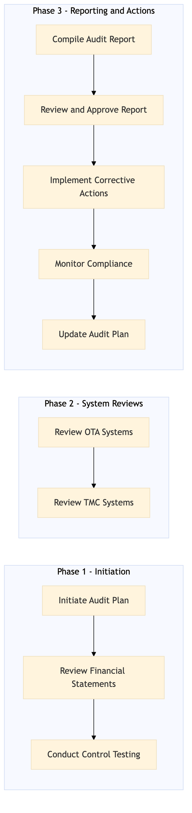

This process document outlines the internal audit and SOX compliance for the Finance and Settlement domain, focusing on Financial Planning and Reporting.
| Trigger | Scheduled quarterly review or upon detection of potential non-compliance issues. |
| Outcome | Successful completion of internal audit with no material findings related to SOX compliance. |
| Systems | AWS SageMaker Snowflake Concur T2 S/4HANA Expedia Open World Partner Central Amadeus NDC Tableau Salesforce |

Click to enlarge
| Step | Name & Pain Point | Role | System | Input | Output | KPI | Flags |
|---|---|---|---|---|---|---|---|
| 1.1 | Initiate Audit Plan Resource allocation for audit team | Internal Auditor | N/A | Audit scope and objectives | Audit plan document | Plan completion within 2 weeks | ◆ Decision |
| 1.2 | Review Financial Statements Data accuracy and completeness | Finance Analyst | AWS SageMaker, Snowflake | Financial data and reports | Analyzed financial statements | Data review completion within 3 weeks | ⚠ Exception |
| 1.3 | Conduct Control Testing Complexity of control procedures | Internal Auditor | Concur T2, S/4HANA | Control procedures documentation | Test results and findings | Testing completion within 4 weeks | ◆ Decision |
| 1.4 | Review OTA Systems Integration with multiple systems | IT Security Analyst | Expedia Open World, Partner Central, Amadeus NDC | System access logs and configurations | Security assessment report | Review completion within 5 weeks | ⚠ Exception |
| 1.5 | Review TMC Systems Integration with multiple systems | IT Security Analyst | Concur Expense, Amex GBT Neo/Complete | System access logs and configurations | Security assessment report | Review completion within 5 weeks | ⚠ Exception |
| 1.6 | Compile Audit Report Data visualization and reporting | Internal Auditor | Tableau, Salesforce | Audit findings and test results | Final audit report | Report completion within 6 weeks | ◆ Decision |
| 1.7 | Review and Approve Report Management buy-in | Finance Manager | Salesforce | Final audit report | Approved audit report | Approval within 2 weeks | ◆ Decision |
| 1.8 | Implement Corrective Actions Resource allocation for corrective measures | IT Security Analyst, Finance Analyst | Various systems as needed | Approved audit report | Corrective actions implemented | Actions completed within 3 months | ◆ Decision |
| 1.9 | Monitor Compliance Continuous monitoring and reporting | Internal Auditor, Finance Analyst | Various systems as needed | Corrective actions and ongoing monitoring | Compliance status report | Ongoing compliance checks every quarter | ◆ Decision |
| 1.10 | Update Audit Plan Resource allocation for plan updates | Internal Auditor | N/A | Compliance status report | Updated audit plan | Plan update within 2 weeks | ◆ Decision |